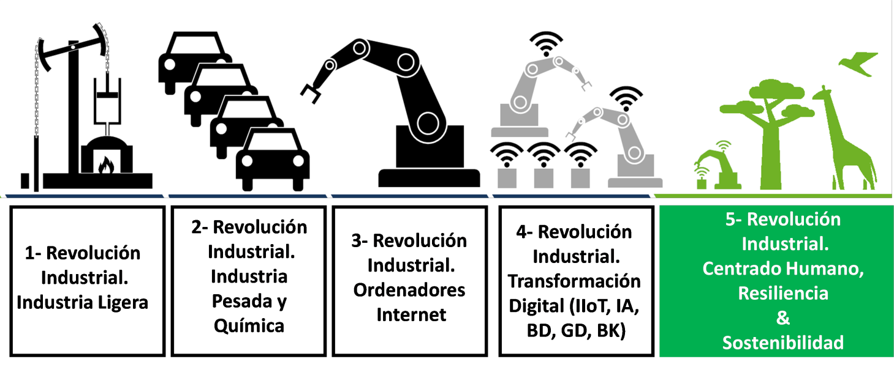
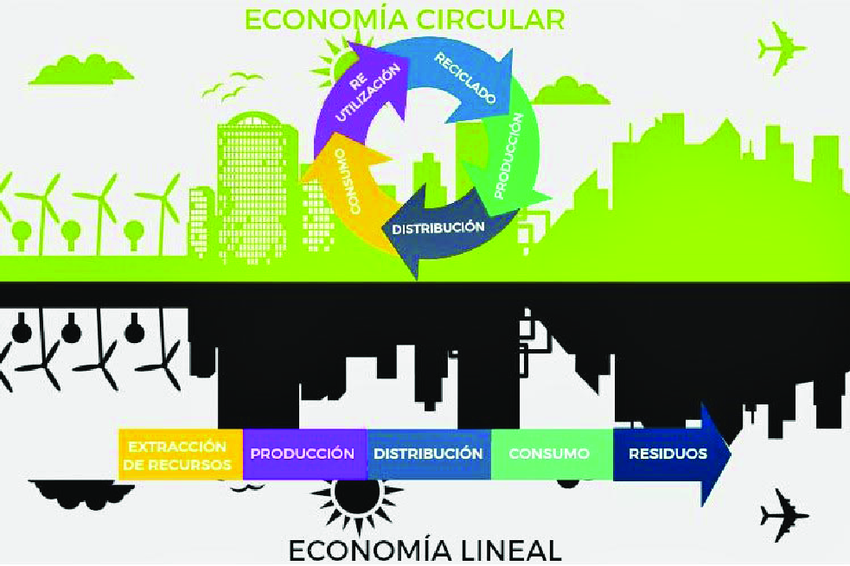
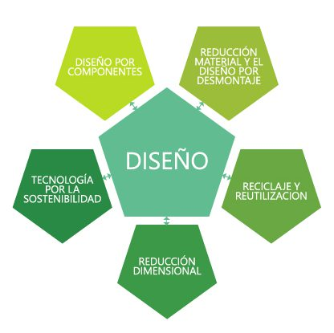
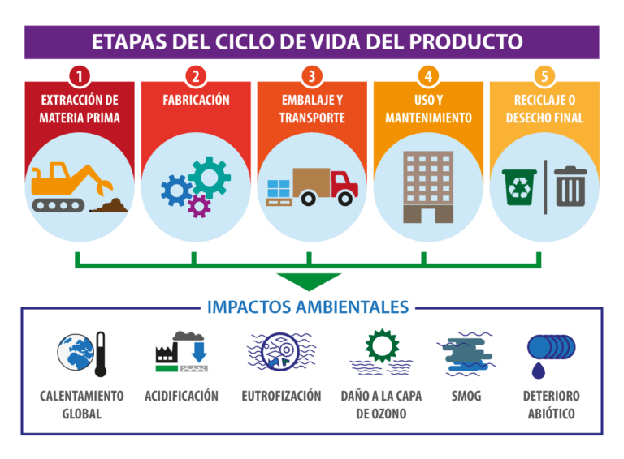

Caracterització de tecnologíes habilitadores
1. Tecnologies habilitadores digitals (THD)
Els processos de transformació digital tenen un impacte significatiu en tots els sectors productius i en els ciutadans, oferint grans oportunitats de creixement, innovació i emprenedoria, però també portant grans desafiaments i nous riscos. El factor d’èxit més important en la transformació digital és la ràpida adopció de tecnologies digitals, així com la seua àmplia gamma competitiva de productes i serveis, la qual cosa serveix com a catalitzador per a accelerar els processos de transformació digital i també com una important oportunitat per al sector industrial de tecnologies digitals.
Al conjunt de tecnologies clau, que actuen com a facilitadores fonamentals per a la transformació digital, se li coneix com a tecnologies habilitadores digitals. Aquestes tecnologies proporcionen la infraestructura i les capacitats necessàries per a impulsar la digitalització i aprofitar les oportunitats que ofereix l’era digital.
Algunes de les principals tecnologies habilitadores digitals són:
-
Internet de les coses (IoT) L’IoT implica la connexió de dispositius físics a través de la xarxa, permetent la recopilació i l’intercanvi de dades entre ells. Això possibilita l’automatització, la monitorització en temps real i la presa de decisions, la qual cosa té aplicacions en diverses indústries com la salut, l’agricultura, la manufactura i la logística.
-
Intel·ligència artificial (IA) La IA involucra sistemes informàtics que poden realitzar tasques que normalment requeririen intel·ligència humana. Això inclou el processament automàtic, el processament de llenguatge natural, la visió per computador i altres disciplines que permeten a les màquines aprendre i realitzar funcions complexes.
-
Big data i analítica Aquestes tecnologies se centren en la gestió i l’anàlisi de grans volums de dades. El big data aborda la recopilació i l’emmagatzematge de dades a gran escala, mentre que l’analítica se centra en extraure coneixements i patrons significatius a partir d’aquestes dades. Aquestes tecnologies són fonamentals en la investigació científica, la personalització de serveis, la millora de l’eficiència operativa i el desenvolupament d’estratègies comercials basades en dades.
-
Blockchain Aquesta tecnologia de registre distribuït proporciona una gestió segura i transparent de transaccions. S’utilitza comunament en aplicacions financeres, però també té aplicacions en la cadena de subministrament. La gestió de contractes i l’autenticació o característiques de descentralització i seguretat l’han portat a la seua adopció en diversos àmbits on la confiança i la transparència són crucials.
-
Computació en el núvol La computació en el núvol implica l’accés a recursos informàtics, com emmagatzematge, processament i aplicacions, a través d’una infraestructura que pot ser de tipus local, remota (internet) o una combinació de les dues. Permet l’escalabilitat, la flexibilitat i l’accés bajo demanda a recursos tecnològics sense la necessitat de posseir o mantenir infraestructures físiques.
-
Realitat augmentada (RA) La RA combina elements del món real amb elements virtuals, superposant informació (com gràfics, so o dades) sobre la vista del món real a través de dispositius com telèfons intel·ligents, tauletes o ulleres especials. Això permet als usuaris interactuar amb un entorn real millorat per la informació digital, la qual cosa té aplicacions significatives en àrees com la formació, l’assistència mèdica, el màrqueting i els jocs.
-
Realitat virtual (RV) La RV submergeix completament els usuaris en un entorn virtual simulat, sovint amb l’ús d’ulleres de realitat virtual. Aquest entorn artificial pot ser completament fictici o una representació digital del món real. La RV s’utilitza en diverses àrees, des de simulacions d’entrenament i experiències fins a aplicacions mèdiques i teràpies virtuals.
-
Impressió 3D L’impressió 3D, també coneguda com a fabricació additiva, és una tecnologia habilitadora digital que ha transformat significativament la manera en què es dissenyen i produeixen objectes. Aquesta tecnologia ha democratitzat el procés de fabricació en permetre que petites empreses, laboratoris d’investigació i entusiastes creen productes d’una manera accessible i eficient.
-
Ciberseguretat IT i OT La ciberseguretat IT i OT busca garantir la seguretat i resiliència en entorns digitals interconnectats. La part IT se centra a protegir usuaris i actius digitals, prevenir amenaces cibernètiques i gestionar identitat i accés. La part OT se centra en la seguretat de sistemes de control industrial, la integració segura de dispositius IoT industrials i la resiliència d’infraestructures crítiques. La ciberseguretat, tant IT com OT, és una tecnologia habilitadora digital que s’estén a tots els àmbits, ja que qualsevol entorn digital necessita disposar de mesures de protecció sòlides.
-
Bessons digitals Els bessons digitals són una tecnologia habilitadora digital que crea representacions precises en temps real d’objectes físics o sistemes. Permet la simulació, l’anàlisi predictiu i l’optimització de processos en diversos camps, com la fabricació, la salut i la gestió d’actius. Amb les dades recollides en temps real, facilita la presa de decisions informades. A més, els bessons digitals s’utilitzen per a la gestió de riscos, manteniment predictiu i disseny de productes. També tenen aplicacions en medicina, realitat augmentada i entorns urbans intel·ligents, facilitant la innovació i la presa de decisions estratègiques.
-
Robòtica col·laborativa La robòtica col·laborativa, o cobòtica, és una tecnologia habilitadora digital que facilita la col·laboració segura entre humans i robots en entorns de treball compartits. Ofereix beneficis com l’automatització, l’optimització de processos i l’augment de la productivitat. A més, aquesta tecnologia té aplicacions en sectors com la manufactura, la salut i els serveis. Destaca per la seua capacitat d’adaptar-se a tasques variades i la implementació d’interfícies intuïtives, contribuint a l’eficiència i transformació digital en entorns laborals.
-
Xarxes 5G La cinquena generació de tecnologies de xarxa mòbil, comunament coneguda com 5G, representa un avanç significatiu en les capacitats de connectivitat sense fils. Aquestes xarxes estan dissenyades per a oferir velocitats de transmissió de dades molt més ràpides, menor latència i una major capacitat de connexió simultània en comparació amb les seues predecessores, com el 4G.
Les xarxes 5G són un component fonamental en l’ecosistema de tecnologies habilitadores digitals, ja que proporcionen la infraestructura de connectivitat necessària per al funcionament eficient de les tecnologies mencionades anteriorment. La capacitat de transmetre grans volums de dades de manera ràpida i fiable impulsa l’adopció i el rendiment efectiu d’aquestes tecnologies en diversos entorns, des de les grans empreses fins a les llars.
Les primeres integracions de THD en la indústria van sorgir fa aproximadament una dècada. La seua aparició va donar lloc a un nou model que es va denominar indústria 4.0, en el qual hi havia una aposta clara per digitalitzar i automatitzar processos.
Tanmateix, l’evolució de les THD ha fet que canvie el paradigma i que la tecnologia no s’use simplement com un suport. Ara els dispositius tenen un paper molt més rellevant: són capaços de generar coneixement pel seu compte i de prendre decisions basades en una translació de dades que realitzen de manera autònoma. Aquesta nova era es coneix com a indústria 5.0.
Revolucions industrials
-
Indústria 1.0 Mecanització a través del vapor i l’energia hidràulica.
-
Indústria 2.0 Integració de línies de producció i ús de l’energia elèctrica.
-
Indústria 3.0 Integració de la tecnologia i l’automatització de processos.
-
Indústria 4.0 Integració de les primeres THD per comunicació autònoma de línies.
-
Indústria 5.0 Ús intensiu de les THD posant el treballador en el centre del procés.

2. Les THD en el desenvolupament de productes i serveis
La introducció i incorporació de noves tecnologies digitals en diversos aplicatius industrials i sectors exerceixen un paper fonamental en l’augment de l’eficiència i també en la millora de la competitivitat en la nostra economia.
Aquest impacte es veu clarament en el Programa Estatal de Lideratge Empresarial en I+D+i amb l’aparició d’un subprograma per a l’impuls de les Tecnologies Habilitadores Digitals, que ho defineix com un element clau per a promoure la investigació, el desenvolupament i la innovació en aquest pla.
Les prioritats estratègiques en investigació, desenvolupament tecnològic i innovació se centren en:
- IoT i les seues aplicacions.
- Infraestructures digitals i xarxes 5G, orientades a la mobilitat i a l’alta demanda de connectivitat.
- Computació en el núvol i aplicacions més segures.
- Processament massiu de dades (big data), tant per a productes i serveis com per a informes estadístics públics.
- Computació d’alt rendiment (HPC).
- Processament avançat del llenguatge natural.
- Ciberseguretat, biometria i identitat digital, amb especial atenció als drets ciutadans i col·lectius vulnerables.
-
Ciberseguretat industrial, garantint el funcionament segur d’instal·lacions, infraestructures i serveis essencials.
-
Desenvolupament d’aplicacions avançades, de dispositius mòbils orientades a la transformació, modernització i competitivitat.
-
Activitats de I+D+i, com la digitalització del patrimoni cultural, creació d’entorns culturals virtuals i digitalització cultural i artística.
Vocabulari
- HPC: High performance computing, o computació d’alt rendiment.
Projecte Quantum Spain
Un ecosistema de computació quàntica d’Espanya per a la IA que està finançat amb fons europeus i en què actualment hi participen 27 institucions col·laborant en el seu desenvolupament.
Estrategia Nacional de Inteligencia Artificial
El Ministeri per a la Transformació Digital s’encarrega de la gestió de l’ENIA.
3. Les THD i l’economia sostenible
3.1. Tipus d’economia
Existeixen dos models econòmics, que, en essència, són antagònics tant en el plantejament com en el tractament del producte i els resultats.
Economia lineal
Aquest model segueix un flux unidireccional de la producció al consum, terminant amb l’eliminació dels productes una vegada que han arribat al final de la seua vida útil. És a dir, s’extrauen els recursos, es fan servir per a produir béns i, després del consum, els residus es descarten.
Economia circular
Aquest model és una alternativa al model d’economia lineal. Ací l’objectiu és promoure processos de producció que generen el menor impacte possible al medi ambient; és a dir, que el consum d’energia i la generació de residus siguen mínims.

3.2. Models de negoci sostenibles
Els actuals nivells tant en el consum com en l’explotació de recursos, units a l’imparable augment en la població, van a generar un estrès ambiental que tindrà un impacte molt important en el nostre medi ambient. Si continuen els patrons de consum actuals, la pressió esperada sobre els recursos del planeta serà severa: s’estima que el creixement demogràfic originarà un augment del 80% en el consum d’energia, del qual el 85% es proveirà de combustibles fòssils, la qual cosa repercutirà en el canvi climàtic.
Per això, és necessari promoure models de negoci sostenibles basats en minimitzar el consum i el desaprofitament, maximitzant al mateix temps l’ús i el valor. Alguns d’aquests models són:
- Extensió de la vida del producte: model en què es tracta d’eliminar l’obsolescència programada dels productes i apunta a estendre la seua vida útil.
- Producte com a servei: model en què es reemplaça l’adquisició d’un producte per la prestació del servei que ofereix aquest producte.
- Producció JIT: model que es basa en produir béns i serveis just en el moment en què són necessaris, evitant l’emmagatzematge excessiu i els costos associats.
- Simbiosi industrial: model en què es produeix un intercanvi de processos i fluxos operacionals entre empreses per proporcionar servei mutu i evitar invertir per separat.
- Ecodesign: model centrat en el desenvolupament de productes, prestant especial atenció a l’impacte ambiental que produïsca durant tota la seua vida.
- Cadena de subministrament sostenible: model basat en la reutilització de recursos, la qual cosa afavoreix que les empreses integren en els seus processos materials reciclats i/o biodegradables.
- Reciclatge i reutilització: model en què els residus generats per uns productes o serveis s’utilitzen com a energia o en matèries primeres per a nous productes.
3.3. Les THD en els models de negoci sostenibles
Algunes formes en què les THD contribueixen a una economia sostenible són les següents:
Producte com a servei
- La realitat augmentada i la realitat virtual milloren l’experiència del client en oferir demostracions i simulacions virtuals del producte o serveis associats, augmentant el valor afegit.
- La intel·ligència artificial i el big data analitzen les dades d’ús com a font de coneixement, permetent personalitzar l’oferta de serveis de manera proactiva.
- La tecnologia blockchain proporciona transaccions segures i transparents entre proveïdors i clients, la qual cosa genera confiança en els serveis digitals.
- La computació en el núvol facilita l’accés a serveis des de qualsevol lloc, millorant l’accessibilitat i flexibilitat.
- Les xarxes 5G milloren la velocitat de transmissió de dades per a una experiència en serveis d’altes prestacions, com podrien ser la realitat augmentada i virtual en temps real.
Extensió de la vida del producte
- La impressió 3D facilita la producció de components modulars i la personalització de peces de recanvi. D’aquesta manera, s’afavoreix un model de producció reutilitzable sobre cada mòdul en lloc de fabricar el complet.
- La incorporació de sensors IoT en el producte permet la monitorització i facilita el manteniment predictiu, anticipant-se a problemes i evitant fallades inesperades.
- A través de la tecnologia blockchain es pot tindre una cadena de subministrament més transparent que permeta al consumidor rastrejar la procedència dels productes i proveïdors, garantint que es seguisquen pràctiques ètiques i sostenibles.
- La realitat augmentada pot proporcionar instruccions visuals detallades que faciliten als consumidors el realitzar reparacions per si mateixos.
- La intel·ligència artificial i el big data poden analitzar dades d’ús per a preveure tendències i demandes futures. Amb aquesta informació, les empreses poden oferir actualitzacions i millores específiques, prolongant la vida útil dels productes.
- La ciberseguretat protegeix els productes contra amenaces cibernètiques, garantint la seguretat de les actualitzacions i assegurant que estenguen la vida útil dels productes connectats. A més, assegura la integritat i confiabilitat de les dades generades pels productes al llarg del seu cicle de vida.
- La robòtica col·laborativa permet la reparació i el manteniment eficient dels productes, prolongant la seua vida útil. Els cobots poden realitzar tasques repetitives i pesades, contribuint a una reparació neta i efectiva.
- Els germans digitals faciliten la monitorització en temps real de productes, ajudant a preveure i evitar possibles fallades. A més, permeten simular escenaris d’ús i desgast, millorant les estratègies de manteniment preventiu.
Vocabulari
JIT: just in time, o just a temps, en el moment precís.
Producció JIT
- La impressió 3D facilita la producció ràpida i personalitzada de components, reduint el temps d’espera i minimitzant l’inventari, ja que només es produeix el que és necessari.
- Els dispositius IoT connecten màquines, sensors i sistemes de control, permetent la recopilació de dades en temps real sobre el rendiment de la maquinària i les condicions de producció.
- La intel·ligència artificial i el big data poden analitzar grans conjunts de dades, predir patrons de consum i prendre decisions autònomes per a optimitzar la planificació de la producció.
- La computació en el núvol proporciona emmagatzematge escalable, accés a dades en temps real i col·laboració eficient entre diferents parts del procés de producció.
- Les xarxes 5G proporcionen connectivitat ultraràpida i confiable, permetent la comunicació instantània entre màquines i sistemes de control.
- La ciberseguretat garanteix la protecció dels sistemes de producció i la cadena de subministrament, evitant interrupcions no desitjades i assegurant la integritat de les dades en temps real utilitzades per a la presa de decisions JIT.
- La robòtica col·laborativa facilita l’automatització eficient de tasques en el procés de producció, adaptant-se ràpidament a les demandes canviants i millorant la flexibilitat de la producció JIT.
- Els germans digitals optimitzen la planificació i l’execució de la producció en proporcionar una representació digital precisa dels processos en temps real, permetent ajustos instantanis i minimitzant el desaprofitament.
El mètode Toyota
El mètode just in time, o just a temps, també conegut com a mètode Toyota, és un sistema d’organització de la producció d’origen japonés que té com a objectiu reduir els costos, especialment de matèria primera, de manera que redueix o inclús elimina la necessitat d’emmagatzemar i traslladar la matèria primera del magatzem a la línia de producció, fins al punt que les peces d’automòbils arriben a casa al mateix temps que s’instal·len, eixint de la línia de producció a demanda.
Simbiosi industrial
- Els dispositius IoT optimitzen la coordinació entre empreses al compartir dades sobre la producció i les necessitats operatives.
- La tecnologia blockchain assegura la transparència i confiança en les transaccions industrials.
- La computació en el núvol facilita l’intercanvi d’informació i recursos necessaris per a realitzar les operacions.
- Les xarxes 5G milloren la velocitat, permetent la comunicació entre els sistemes implicats amb una alta fiabilitat i baixa latència.
- La ciberseguretat assegura la integritat i confidencialitat de les dades compartides entre empreses en un entorn de simbiosi industrial, mitjançant riscos de ciberatacs i garantint la confiança en les operacions.
- La robòtica col·laborativa facilita la col·laboració eficient entre treballadors i robots o robots compartits entre empreses, millorant la productivitat i optimitzant els fluxos de treball.
- Els germans digitals proporcionen una visió compartida i precisa dels processos operatius entre les empreses involucrades, millorant la coordinació i la presa de decisions en un entorn de simbiosi industrial.
Ecodisseny
- Els sistemes de blockchain recopilen dades sobre productes al llarg del seu cicle de vida, permetent un anàlisi detallat de l’impacte ambiental.
- La intel·ligència artificial i el big data ajuden a analitzar i preveure l’impacte ambiental de diferents dissenys, permetent elegir el més adequat i sostenible.
- La impressió 3D facilita la producció de components personalitzats i la creació de prototips de manera sostenible, emprant materials que es poden reciclar fàcilment i generant un impacte nul en la petjada de carboni.
- La realitat augmentada i la realitat virtual ofereixen ferramentes per al prototipat virtual, permetent l’avaluació del disseny i la identificació de millores sense necessitat de generar un producte real.
- La tecnologia blockchain garanteix la traçabilitat i autenticitat dels materials sostenibles usats en el disseny del producte.
- La ciberseguretat garanteix la integritat de les dades utilitzades en el disseny sostenible i protegeix la propietat intel·lectual associada a l’ecodisseny, assegurant la seguretat del procés creatiu.
- La robòtica col·laborativa pot emprar-se en les fases de disseny i prototipat per a muntar i provar ràpidament prototips, accelerant el procés de decisió.
- Els germans digitals permeten simular el cicle de vida complet del producte des de la fase de disseny, avaluant el seu impacte ambiental i facilitant la presa de decisions orientades a la sostenibilitat.

Cadena de subministrament sostenible
- La incorporació de dispositius IoT en productes i embalatges permet el seguiment en temps real, millorant la visibilitat i sostenibilitat en cada etapa de la cadena de subministrament.
- La tecnologia blockchain garanteix la traçabilitat i transparència en la cadena de subministrament, fomentant pràctiques sostenibles i ètiques.
- La computació en el núvol facilita l’intercanvi d’informació sobre pràctiques sostenibles i certificacions al llarg de la cadena de subministrament.
- Les xarxes 5G milloren la connectivitat per a una coordinació eficient entre diferents nodes de la cadena de subministrament.
- La intel·ligència artificial optimitza la planificació de la cadena de subministrament, millorant l’eficiència i reduint desaprofitaments.
- La ciberseguretat assegura la integritat i seguretat de les dades en tota la cadena de subministrament, garantint la confidencialitat de la informació i protegint contra ciberatacs que podrien afectar la sostenibilitat de la cadena.
- L’anàlisi de big data permet una gestió eficient de residus, identificant oportunitats per a la reducció i reciclatge.
- La impressió 3D pot reduir la necessitat de transport i emmagatzematge, contribuint a una cadena de subministrament més sostenible.
- La realitat augmentada i la realitat virtual es fan servir per a la formació d’empleats i simulacions que milloren l’eficiència operativa i la gestió sostenible.
- La robòtica col·laborativa contribueix a l’eficiència en la cadena de subministrament, des de la producció fins a la logística, mitjançant l’automatització de tasques i la millora en la gestió d’inventari.
- Els germans digitals permeten mantindre una visibilitat completa de la cadena de subministrament, facilitant la identificació d’àrees de millora i l’optimització contínua per a aconseguir una cadena de subministrament més sostenible.
Reciclatge i reconversió
- Els sensors IoT permeten monitorar en temps real el flux de materials, millorant l’eficiència i la qualitat del reciclatge.
- La intel·ligència artificial optimitza la classificació de materials reciclables, millorant l’eficiència del procés i reduint la contaminació en el reciclatge.
- La impressió 3D s’utilitza per a convertir residus en nous productes o components personalitzats.
- Les xarxes 5G milloren la comunicació entre sistemes en temps real, augmentant l’eficiència en els processos de reciclatge.
- La tecnologia blockchain garanteix la traçabilitat i autenticitat dels materials reciclats utilitzats en nous productes.
- L’anàlisi de big data permet sistemes més eficients de logística de reciclatge, identificant oportunitats de millora.
- La computació en el núvol facilita l’emmagatzematge centralitzat de dades sobre reciclatge i la seua compartició a informació rellevant.
- La realitat augmentada i la realitat virtual es fan servir per a la formació d’empleats i simulacions que milloren l’eficiència operativa i la seguretat en els processos de reciclatge.
- La ciberseguretat contribueix a la seguretat dels sistemes de gestió de residus i traçabilitat dels processos de reciclatge, evitant la manipulació no autoritzada de dades relacionades amb la reconversió de residus.
- La robòtica col·laborativa facilita la classificació i desmuntatge de productes per al seu reciclatge, millorant l’eficiència i la qualitat dels materials recuperats.
- Els germans digitals optimitzen els processos de reciclatge en proporcionar una representació digital dels fluxos de residus, permetent una planificació precisa i la identificació d’oportunitats de millora en la reconversió.

4. Mercats generats per les THD
En apartats anteriors hem pogut comprovar que les THD han emergit com a elements clau en la transformació de la societat i de l’economia, desencadenant la creació de nous mercats en una àmplia varietat de sectors.
Aquest fenomen de generació de nous mercats es presenta com una manifestació de la capacitat innovadora i transformadora de l’era digital en la qual la convergència tecnològica impulsa la creació de solucions i serveis que redefinixen la manera en què vivim, treballem i ens relacionem amb el món que ens envolta.
A continuació, anem a comentar alguns mercats o escenaris econòmics que han generat les THD tractades en aquest tema.
4.1 IoT
- Ciutats intel·ligents, en què s’aprofiten sensors i dispositius connectats per a recopilar dades en temps real, millorant l’eficiència operativa i la qualitat de vida.
- Llar connectada, que utilitza dispositius IoT (domòtica) per a l’automatització del llar, brindant comoditat i eficiència energètica, accessibilitat, etc.
- Agricultura intel·ligent, que utilitza sensors i dispositius IoT per a optimitzar la producció agrícola mitjançant la monitorització de cultius i condicions climàtiques.
Info
El Pla Nacional de Ciutats Intel·ligents és l'aposta del Ministeri d'Afers Econòmics i Transformació Digital per impulsar a Espanya la indústria tecnològica de les ciutats intel·ligents i per ajudar les entitats locals en els processos de transformació cap a ciutats i destinacions intel·ligents.
4.2 IA
- Automatització industrial, en la qual es millora l’eficiència i la precisió en els processos de fabricació.
- Salut digital, que proporciona diagnòstics ràpids i personalitzats que repercutixen en una millor atenció mèdica.
- Assistents virtuals i chatbots, que milloren la interacció i l’eficiència en serveis d’assistència i atenció al client.
4.3 Big data i analítica
- Anàlisi de dades empresarials, que genera informació valuosa per a la presa de decisions.
- Salut predictiva, que ajuda a previndre malalties i personalitzar tractaments.
- Publicitat personalitzada, que ofereix anuncis més rellevants a audiències específiques.
4.4 Blockchain
- Finances descentralitzades, que apliquen blockchain per a serveis financers descentralitzats, com préstecs, canvi de divisa i criptomonedes.
- Traçabilitat en la cadena de subministrament, que aplica blockchain per a assegurar l’autenticitat en la cadena de subministrament.
- Contractes intel·ligents, que són autoexecutables i programables, proporcionant transparència i seguretat.
- NFT, basats en blockchain, que representen actius digitals únics com obres d’art digital o elements de jocs, brindant autenticitat i propietat.
- Metavers, que és un espai virtual interconnectat on els usuaris poden interactuar entre si i amb objectes digitals, potenciats per blockchain per a la propietat d’actius virtuals.
4.5 Computació en el núvol
- Serveis d’emmagatzematge en el núvol, que poden ser acompanyats d’altres serveis com seguretat, ferramentes per a visualització o edició, etc.
- Programari com a servei (SaaS), que és un model de computació en el núvol en el qual s’ofereix a l’usuari una aplicació accessible via internet, sense necessitat que la tinga instal·lada en el dispositiu des del qual s’utilitza.
- Infraestructura com a servei (IaaS), que és un altre model de computació en el núvol en què s’ofereix accés a recursos hardware virtualitzats, de manera que l’usuari no necessita adquirir-los físicament per a utilitzar-los.
4.6 RA i RV
- Entreteniment i jocs, en què es proporcionen experiències immersives als usuaris a través d’aquestes tecnologies.
- Formació virtual, que facilita simuladors i entrenaments immersius en ferramentes, productes o entorns de treball.
- Medicina virtual, que proporciona models de visualització 3D per a tractaments, cirurgies, simulacions…
4.7 Impressió 3D
- Enginyeria i disseny industrial, que s’usa extensament per a la creació de prototips ràpids. Això permet realitzar iteracions i ajustos de manera àgil i econòmica que acceleren significativament els processos de desenvolupament de productes i faciliten la innovació en diversos sectors.
- Sector mèdic, per a la creació de pròtesis i models anatòmics.
4.8 Xarxes 5G
- Telecomunicacions, que amplien les prestacions de connectivitat i velocitat en serveis de comunicació, la qual cosa afavoreix l’accés universal a internet.
- Oci multimèdia, com a conseqüència de l’augment de la velocitat i de l’amplada de banda, que proporciona una ampla oferta en plataformes de televisió, pel·lícules i sèries, jocs, música, etc.
- Serveis avançats, en què es millora la comunicació instantània i estable, habilitant funcions avançades de connectivitat augmentada i segura.
Vocabulari
NFT: non-fungible token, o testimoni no fungible.
Plan Nacional de Ciudades Inteligentes
El Pla Nacional de Ciutats Intel·ligents és la proposta del Ministeri d’Afers Econòmics i Transformació Digital per a impulsar a Espanya la indústria tecnològica de les ciutats intel·ligents i per a ajudar les entitats locals en els processos de transformació cap a ciutats i destins intel·ligents.